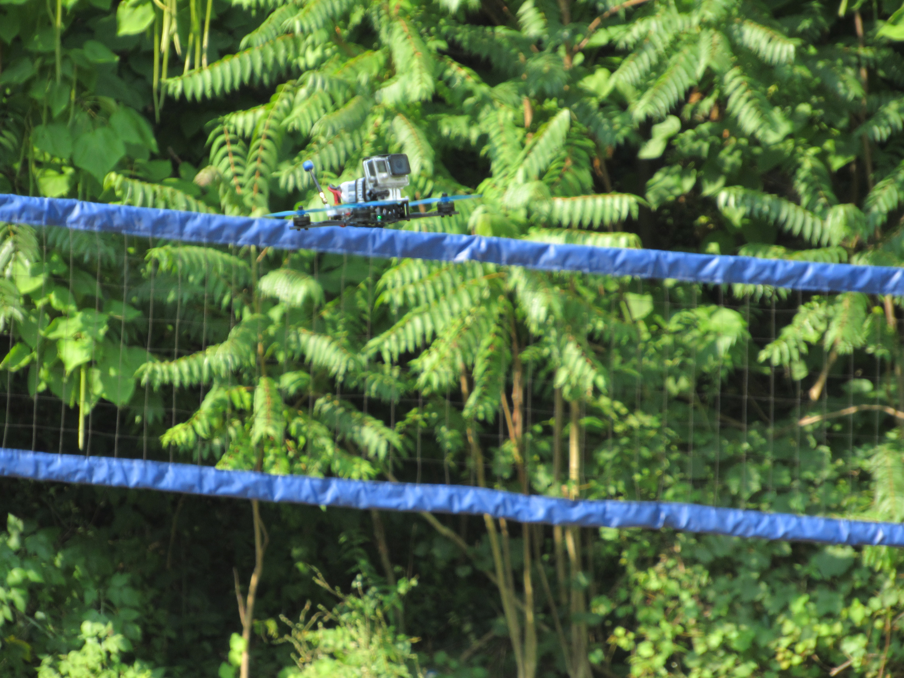
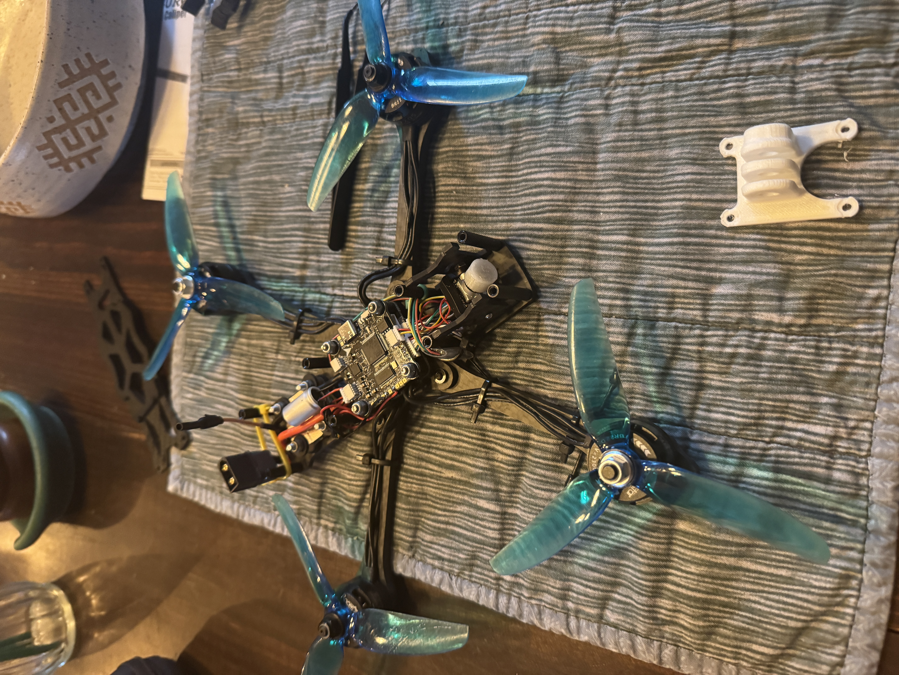
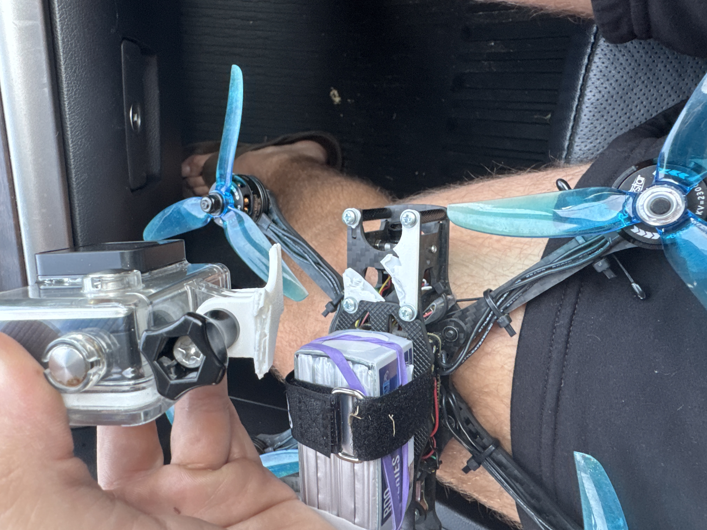

After completing coursework in aerospace structures and fluid dynamics, I applied key design and analysis principles to the development of a custom-built First Person View (FPV) drone. Built on a 5-inch carbon fiber frame, the aircraft uses a HGLRC 60A 4-in-1 ESC/Flight Controller stack, 2300 KV brushless motors, and a CaddxFPV Ant camera. It runs the ExpressLRS open-source radio protocol for low-latency, long-range control and a 250–800 mW SpeedyBee video transmitter for real-time feedback to SkyZone Cobra box goggles. Every subsystem was soldered, calibrated, and tested for flight stability and reliable image/control transmission.
Electrical Integration
- Soldered and tested all electrical connections between the ESC, flight controller, motors, receiver, battery leads, filtering capacitor, and VTX
- Diagnosed and corrected voltage supply errors that damaged the first VTX during early building
- Researched radio and video telemetry protocols, transmission procedures, and gigahertz-frequency signal properties
- Studied accelerometer and gyroscope applications beyond standard UAS use
Mechanical Design & Assembly

Antenna and battery cable holder CAD
- Used OnShape CAD to design and 3D-print form-fit components for nonstandard frame dimensions
- Developed custom mounts for a cloverleaf LHCP antenna, GoPro housing, and battery cable routing
- Machined properly spaced holes in the prefabricated frame and used soft, vibration-dampening silicone gaskets to stabilize the VTX and camera assembly
Flight Readiness & Certification
- Calibrated flight controls and tuned PID parameters for responsive handling
- Researched FAA regulations for UAS operation and began work toward FAA TRUST and Part 107 certification, strictly abiding by visual-line-of-sight (VLOS) rules



Left to right: Drone in flight, camera mount replacement process, broken camera mount
Sample flight footage: youtu.be/vVl2MMHaQoQ